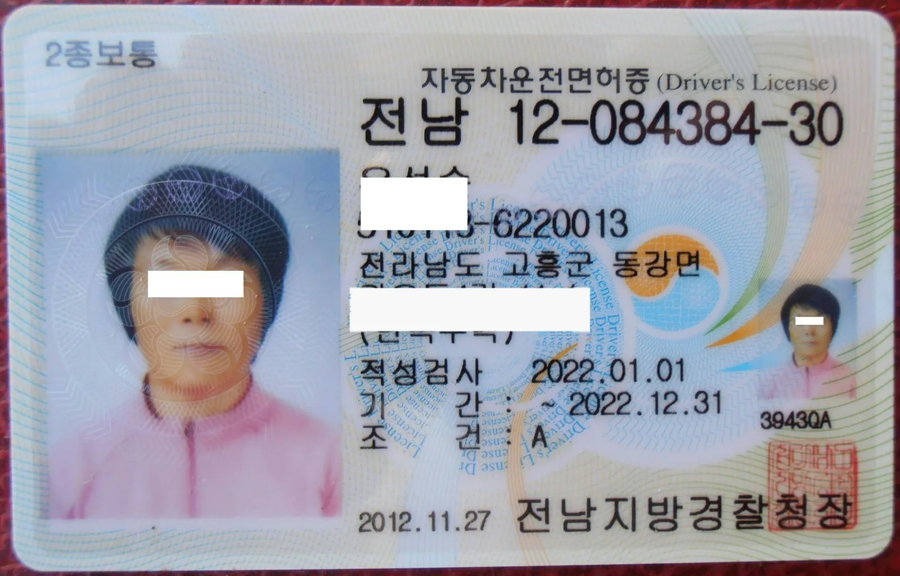
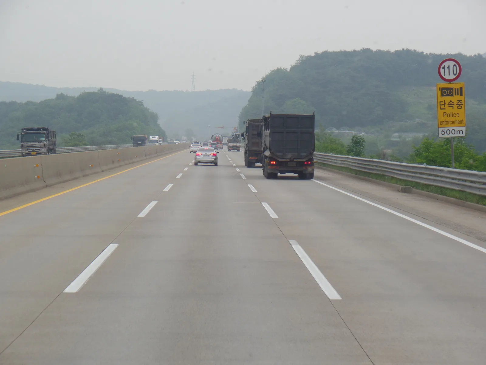
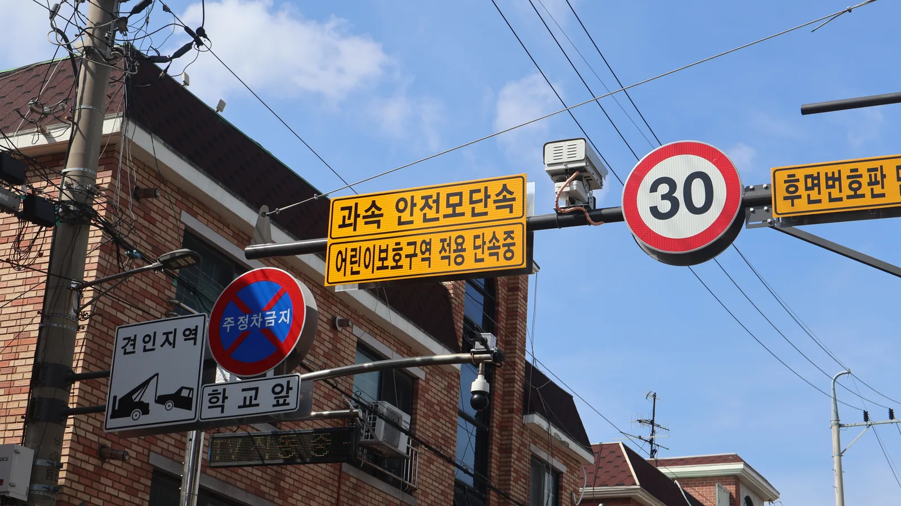
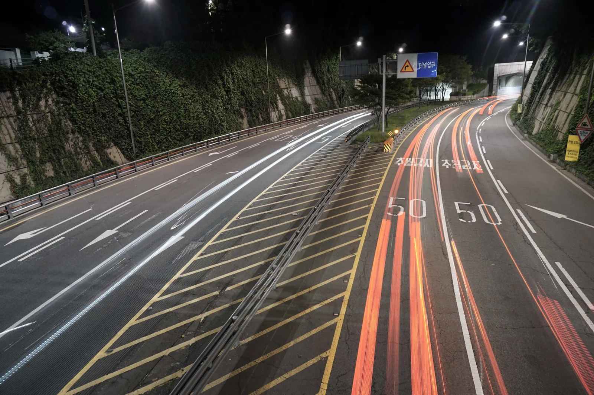

▲ 운전면허 벌점은 위반 1건으로도 40점을 넘어 정지 처분으로 이어질 수 있다 ⓒ Wikimedia Commons
과속 카메라에 한 번 찍혔을 뿐인데 면허가 정지됐다는 얘기, 과장이 아니다.
스쿨존에서 시속 60km를 넘겨 달리다 경찰관에게 현장 적발되거나, 무인카메라 단속에서 범칙금·벌점 처리를 선택하면 단 한 번의 적발로 벌점 120점이 부과된다. 정지 기준(40점)의 세 배다. 반대로 신호위반(15점) 한두 번 정도는 대수롭지 않게 여기기 쉽지만, 짧은 기간 안에 겹치면 이 역시 정지로 이어질 수 있다.
운전면허 벌점제도는 위반의 경중에 따라 점수를 매기고, 이를 일정 기간 누적 계산해 정지·취소 여부를 가리는 방식으로 운영된다. 도로교통법 시행규칙과 도로교통공단·경찰청 자료를 바탕으로 2026년 기준 벌점 구조를 정리했다.
1. 벌점제도 기본구조 — 1년·2년·3년 누산이 무슨 뜻인가
벌점은 위반 1건마다 개별적으로 매겨지고, 이를 계속 더해 나간 값이 '누산점수'다. 신호위반으로 15점을 받은 상태에서 두 달 뒤 중앙선침범(30점)을 하면, 그 시점의 누산점수는 45점이 된다.
| 용어 | 의미 |
|---|---|
| 벌점 | 위반행위 1건 또는 사고 1건에 매겨지는 점수 |
| 누산점수 | 일정 기간(1·2·3년) 동안 받은 벌점을 모두 더한 값 — 취소 여부 판단 기준 |
| 처분벌점 | 이미 정지처분에 사용된 벌점을 제외하고 다음 처분에 적용될 벌점 — 정지 여부 판단 기준 |
📍 정지와 취소는 판단 기준부터 다르다
정지는 1회 위반·사고로 벌점(또는 그때까지의 처분벌점)이 40점을 넘는 순간 결정된다. 반면 취소는 여러 건이 누적된 누산점수가 1년·2년·3년 기준을 넘었는지로 판단한다. 즉 한 번의 큰 사고로도 정지·취소 모두 가능하고, 작은 위반이 여러 번 겹쳐도 취소까지 갈 수 있다.
2. 정지 기준 — 벌점 40점, 1점당 1일
1회의 법규 위반이나 교통사고로 받은 벌점(또는 그 시점의 처분벌점)이 40점 이상이 되면, 운전면허는 정지된다. 정지 기간은 원칙적으로 벌점 1점당 1일로 계산한다. 벌점이 60점이면 60일, 90점이면 90일 정지가 되는 식이다.

▲ 고속도로 구간단속 카메라 앞. 단 한 번의 과속 적발로도 벌점 40점을 넘길 수 있다 ⓒ Wikimedia Commons
✅ 정지처분 진행 방식
· 벌점이 40점을 넘는 그 위반·사고 건이 확정된 시점부터 정지 절차가 시작됨
· 정지 기간 중에는 운전이 금지되며, 위반 시 무면허 운전으로 별도 처벌됨
· 정지 예정 통지를 받으면 특별교통안전교육 이수 등으로 기간을 줄일 여지가 있음(4번 항목 참고)
3. 취소 기준 — 1년 121점 · 2년 201점 · 3년 271점
정지와 별개로, 누산점수가 아래 기준을 넘으면 면허 자체가 취소된다. 여러 번의 가벼운 위반이 쌓여도 결국 취소에 이를 수 있다는 뜻이다.
| 기간 | 누산점수 |
|---|---|
| 1년간 | 121점 이상 |
| 2년간 | 201점 이상 |
| 3년간 | 271점 이상 |
📍 음주운전 등은 벌점과 별개로 즉시 취소되기도 한다
음주운전, 무면허운전, 약물운전, 뺑소니 등 일부 중대 위반행위는 누산점수와 무관하게 그 자체로 면허가 취소되는 별도 기준이 적용된다. 이 글에서 다루는 누산점수 기준은 벌점이 반복적으로 쌓여 취소되는 경우에 해당한다.
4. 위반행위별 벌점표
같은 '위반'이라도 벌점 차이가 크다. 대표적인 법규위반과 교통사고 벌점을 정리했다.
| 위반행위 | 벌점 |
|---|---|
| 신호·지시 위반 | 15점 |
| 중앙선 침범 | 30점 |
| 운전 중 휴대전화 사용 | 15점 |
| 속도위반 (20km/h 초과 ~ 40km/h 이하) | 15점 |
| 속도위반 (40km/h 초과 ~ 60km/h 이하) | 30점 |
| 속도위반 (60km/h 초과) | 60점 |
| 어린이보호구역 내 속도위반 (60km/h 초과) | 120점 |
| 피해 정도 | 벌점 (1명당) |
|---|---|
| 사망 1명 (사고발생 후 72시간 이내) | 90점 |
| 중상 1명 (3주 이상 치료) | 15점 |
| 경상 1명 (3주 미만 5일 이상 치료) | 5점 |

▲ 어린이보호구역에는 제한속도 30km 표지판과 함께 무인 과속단속 카메라가 설치돼 있다 ⓒ Wikimedia Commons
📍 어린이보호구역은 벌점이 가중된다
일반 도로에서 시속 60km/h 초과 속도위반은 벌점 60점이지만, 어린이보호구역(스쿨존)에서 같은 초과 구간을 위반하면 벌점이 120점으로 두 배가 된다. 단 한 번의 스쿨존 과속 적발만으로도 정지 기준(40점)을 세 배 넘는다는 뜻이다.
📍 무인카메라 단속은 원칙적으로 벌점이 없다
스쿨존 과속단속카메라 등 무인 장비에 적발되면 원칙적으로 차량 소유주에게 과태료만 부과되고 벌점은 매겨지지 않는다. 운전자를 특정해 범칙금 납부를 선택하는 경우에만 벌점이 함께 부과된다. 반면 경찰관이 현장에서 직접 적발하면 범칙금과 벌점이 동시에 부과된다. 즉 스쿨존 카메라에 찍혔다고 곧바로 벌점 120점이 쌓이는 것은 아니며, 벌점이 붙는 경우는 현장 단속이거나 운전자가 범칙금 처리를 선택했을 때로 제한된다.
5. 벌점 감경 방법 — 특별교통안전교육, 착한운전 마일리지
벌점이 쌓였다고 손 놓고 있을 필요는 없다. 제도적으로 벌점을 줄이거나 정지 기간을 단축할 수 있는 방법이 마련돼 있다.
▲ 단속 현장에서 적발되면 벌점이 곧바로 누산점수에 반영된다 ⓒ Wikimedia Commons
✅ 벌점을 줄이는 세 가지 방법
· 특별교통안전교육(벌점감경교육) 이수 — 처분벌점이 40점 미만인 사람이 대상, 이수 시 처분벌점 20점 감경(연 1회 한정)
· 착한운전 마일리지 — 경찰서·정부24·이파인에서 무위반·무사고 서약 후 1년간 실천하면 10점 특혜점수 적립, 정지처분 시 사용 가능(음주운전·난폭운전 등에는 사용 불가)
· 도주(뺑소니) 차량 신고 — 신고·검거에 기여하면 40점의 특혜점수 부여
· 이미 정지처분을 받은 경우라도 법규준수교육을 이수하면 정지기간이 20일 감경되고, 여기에 현장참여교육까지 마치면 최대 30일이 추가로 감경될 수 있다.
착한운전 마일리지는 정부24에서도 온라인으로 신청할 수 있다. 착한운전 마일리지 신청 바로가기
📍 벌점은 시간이 지나면 저절로 사라지기도 한다
처분벌점이 40점 미만인 경우, 마지막 위반·사고일로부터 교통법규 위반과 사고 없이 1년이 지나면 그 벌점은 자동으로 소멸된다. 다만 40점을 넘어 이미 정지처분을 받은 경우라면 이 소멸 규정과는 별개로 정해진 정지 기간을 채워야 한다.
6. 내 벌점, 어디서 확인하나 — 이파인 조회 방법
현재 내 누산점수와 처분벌점은 경찰청 교통민원24(이파인)에서 실시간으로 조회할 수 있다. 별도 서류 없이 본인인증만으로 확인 가능하다.

▲ 심야·터널 구간처럼 속도위반이 잦은 곳일수록 벌점 누적 속도도 빠르다 ⓒ Wikimedia Commons
✅ 이파인에서 벌점 조회하는 순서
· 경찰청 교통민원24(이파인) 웹사이트 또는 모바일 접속 → 간편인증·공동인증서 등으로 로그인
· [조회] → [운전면허 벌점] 메뉴에서 현재 처분벌점과 과거 누산 이력 확인 가능
· 정부24의 통합민원 서비스에서도 동일하게 조회 가능
· 정지·취소 처분 예정 여부, 남은 정지 기간도 함께 확인할 수 있음
이파인 홈페이지에서 본인의 벌점을 바로 조회할 수 있다. 경찰청 이파인 바로가기
7. 요약
운전면허 벌점은 위반·사고 1건마다 매겨지고, 이를 계속 더한 값에 따라 정지 또는 취소가 결정된다. 1회 위반·사고로 벌점(처분벌점)이 40점 이상이면 1점당 1일 정지되고, 누산점수가 1년 121점·2년 201점·3년 271점을 넘으면 취소된다.
벌점은 위반행위마다 차이가 크다. 신호위반 15점, 중앙선침범 30점 정도지만 속도위반 60km/h 초과는 60점, 어린이보호구역에서는 120점까지 뛴다. 교통사고를 냈다면 사망 1명당 90점, 중상 1명당 15점이 추가된다.
벌점을 줄이는 제도적 방법도 있다. 특별교통안전교육을 이수하면 처분벌점을 20점 감경받을 수 있고, 착한운전 마일리지에 서약해 1년간 무사고를 지키면 10점을 적립할 수 있다. 처분벌점이 40점 미만이라면 무위반·무사고 1년이 지나는 것만으로 벌점이 소멸되기도 한다. 본인의 현재 벌점은 경찰청 이파인에서 언제든 확인할 수 있다.